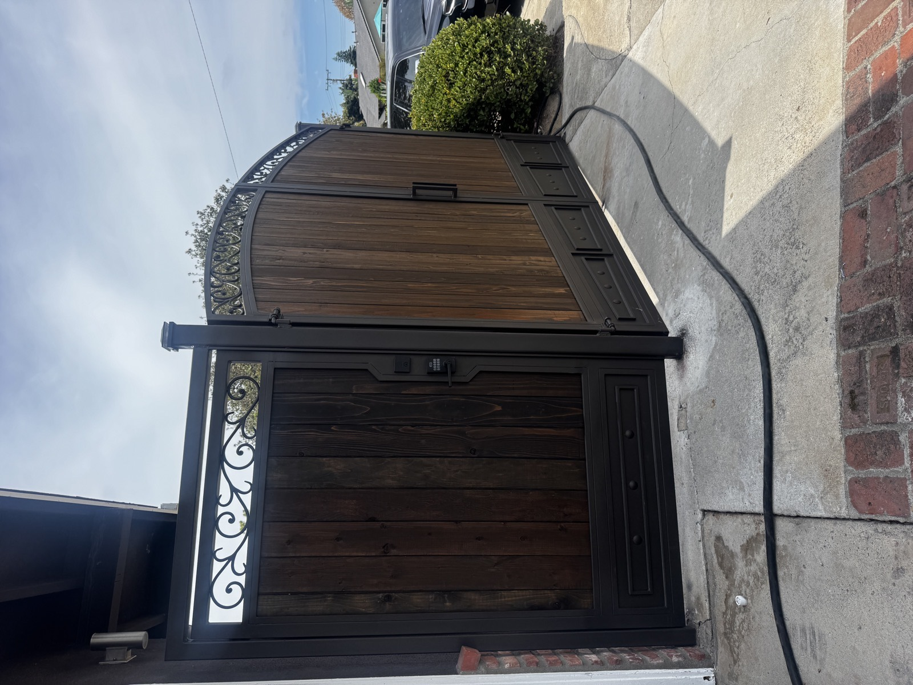

Sagging gates, rusted railings, broken welds and tired finishes — fixed by a metal shop that builds this work from scratch, so we know how it is supposed to go together.
Send your name and number, plus photos if you can. We call back the same day and tell you honestly whether it is worth repairing.
☎ (805) 396-9984A gate that drags, a railing that wobbles or a fence panel that has started to rust usually is not finished. Steel is repairable in a way wood and vinyl are not: worn parts can be cut out, new metal welded in, and the whole piece refinished so it looks and works like new.
We fabricate gates, railings and fences in our Ventura shop, so when we look at a repair we can see why it failed, not just what broke. Sometimes the honest answer is that replacement is the better spend, and when it is, we will say so.
Worn or undersized hinges, a shifted post or a frame that has dropped. We re-hang, re-square or reinforce the gate so it swings clear and latches again.
When an automatic gate’s operator has failed, we replace it and sort out the metalwork around it: hinges, rollers, tracks and the frame itself.
Rust usually starts where a post meets concrete or where water sits. We cut out the damaged steel, weld in new material and refinish it properly.
A wobbly stair railing or guardrail is a safety problem, not a cosmetic one. We re-weld failed joints and re-anchor loose posts so the rail is solid again.
Bent pickets, impact damage and corroded panels on iron and steel fences, repaired and matched to the run that is still standing.
Older and historic wrought iron repaired, with missing scrollwork or pickets recreated to match, then refinished so the original work keeps going.
Repair is usually the right call when the frame is straight and the steel is sound underneath the problem. Replacement starts to make more sense when:
Our guide on whether a driveway gate is worth saving goes through this in more detail.
Book a Free Assessment
A lot of automatic gate failures are not the motor. A gate that has sagged on its hinges or picked up a bind in its track makes the operator work harder until it trips or burns out, and replacing the motor without fixing the gate just starts the clock again.
Before you call anyone, our checklist on what to check when an automatic gate won’t open covers the safe things to look at yourself. If it is the gate or the motor, we can fix both.
If the frame is still straight and the steel is sound, repair is usually the better value: new hinges, a re-hang, rust treatment and a fresh finish can make an old gate work like new for a fraction of the cost of replacement. If the frame is bent, rusted through at the bottom rail, or the gate was undersized for its opening from the start, replacement is often the smarter spend. We will tell you which one makes sense after we see it.
Yes. Most repair work we do is on gates, railings and fences built by someone else. Send us photos of the problem and we can usually tell you what is involved before we come out.
Usually, yes. Dragging and latching problems almost always come from worn or undersized hinges, a post that has shifted, or a frame that has sagged. We correct the cause, not just the symptom, so the gate stays aligned.
We handle gate motor replacement and the metalwork side of automatic gates: hinges, rollers, tracks and frames. Before calling anyone, our checklist for an automatic gate that will not open covers the common causes you can safely check yourself.
Yes. We repair and restore existing wrought iron, including older and historic work: cutting out rusted sections, welding in matching pieces, re-securing loose posts and refinishing. Where a piece can be saved, we would rather save it than replace it.
Custom sliding and swing gates, built in our Ventura shop.
Interior and exterior stair railings and safety guardrails.
Welding repairs, custom steel pieces and structural steel from our shop.